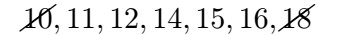
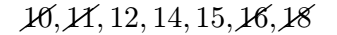
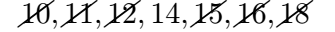
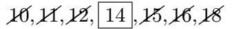
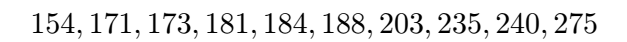
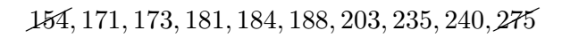
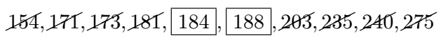

Calculating the Median of a Data Set
The median is a measure of central tendency that represents the middle value of an ordered dataset. In this section, we will define the median, discuss how to calculate it, and explore examples both by hand and using technology.
Median
What is the Median?
The median of an ordered dataset is the value that separates the lower 50% from the upper 50%. This number may or may not be part of the dataset. Unlike the mean, the median does not have a universally accepted notation, but many people represent it as \( M \).
How do I calculate the Median?
Let \( n \) be the sample size of your data.
- Step 1: Order the data from smallest to largest. Ensure all repeated values are included.
- Step 2: Determine whether \( n \) is even or odd:
- If \( n \) is odd, the median is the exact middle data value in the ordered list.
- If \( n \) is even, the median is the average of the two middle data values in the ordered list.
While the procedure for calculating the median seems hard on the surface, it is in fact very easy to calculate, especially for small data sets. The next two examples will demonstrate the process step by step. The first example illustrates how to find the median with an odd sample size.
Example
The following weekly hours spent studying for a sample of 7 students are recorded below. Find the median number of study hours by hand.
| Study Hours Per Week | ||||||
|---|---|---|---|---|---|---|
| 12 | 15 | 10 | 18 | 14 | 11 | 16 |
Solution
First, order the data from smallest to largest: 
Next, strike out the first and last numbers:

Then, strike out the next two inner numbers:

Again, strike out the next two inner numbers:

Now, notice that only one number remains:

Since there is only one number left, \(14\) is our median.
Note
What do we mean by separating the upper 50% of data from the lower 50% of data? In this case, there are the same amount of numbers to the left of 14 as there are numbers to the right of 14. Notice I do not say lower or higher than 14 since there can be repetitions of numbers in the list. The median is determined by its position in the ordered list, not its value.
$$\tag*{\(\blacksquare\)}$$
Finding the median for an even sample size follows the same steps, except for the final calculation.
Example
The cholesterol levels (mg/dL) of a sample of 10 people are recorded below. Find the median cholesterol level by hand.
| Cholesterol Level (mg/dL) | ||||
|---|---|---|---|---|
| 154 | 240 | 171 | 188 | 235 |
| 203 | 184 | 173 | 181 | 275 |
Solution
First, order the data from smallest to largest:

Now, strike off the first and last numbers in the list:

Then, strike out the next two inner numbers:
Again, strike out the next two inner numbers:
Again, strike out the next two inner numbers:
Instead of arriving at a single central number, we end up with two central numbers—184 and 188:

When we end up with two central numbers we will average them together to find the median: \[\text{median }=\dfrac{184+188}{{2}}=186\]
Note
What does it mean to separate the upper 50% from the lower 50% of the data? The median is the average of the two central numbers, so it may not be an actual data point, even if it matches a value in the list. It lies exactly between the two central numbers, dividing the dataset into two equal parts. In this case, the lower half consists of 154, 171, 173, 181, and 184, while the upper half consists of 188, 203, 235, 240, and 275.
$$\tag*{\(\blacksquare\)}$$
Just like the mean, we often compute the median from large data sets. Our next example uses our Summary Statistics Calculator to compute the median.
Example
The following LSAT scores for a sample of 50 students are given below. Find the median of the sample using the Summary Statistics Calculator.
| LSAT Scores | |||||||||
|---|---|---|---|---|---|---|---|---|---|
| 174 | 172 | 169 | 176 | 169 | 170 | 175 | 171 | 168 | 177 |
| 165 | 180 | 173 | 166 | 178 | 170 | 174 | 167 | 179 | 172 |
| 163 | 181 | 171 | 164 | 177 | 169 | 175 | 168 | 180 | 170 |
Solution
We load the data into the Summary Statistics Calculator with its default settings.

Click on the Median checkbox to reveal the value of the median.

Therefore, the value of the median is 171.
$$\tag*{\(\blacksquare\)}$$
Conclusion
The median is a valuable measure of central tendency because it is resistant to outliers. By understanding how to calculate the median manually and using technology, we can analyze data more effectively in various contexts.